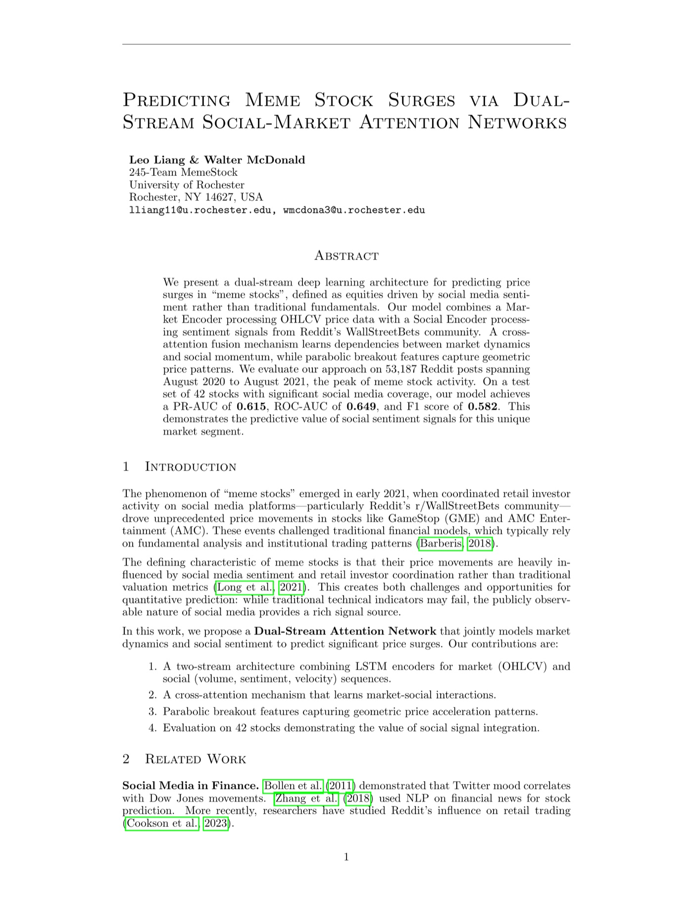

October – December 2025
Meme Stock Surge Prediction
Python · Deep Learning · NLP
View on GitHub →A multi-modal deep learning model that predicts meme-stock surges from social signals on Stocktwits.

The Problem
Meme stocks can surge well past what fundamentals explain, often driven by social momentum — how much people are posting about a ticker, how they feel about it, and how fast that chatter is accelerating. Can that chatter itself be turned into a predictive signal?
The Approach
This is framed as a classification problem: given a stock's recent social activity, will it surge (defined as a ≥2% price increase within the next 5 trading sessions)? Each trading day contributes three features — message volume, average sentiment (scored with VADER and FinBERT), and posting velocity — and a 60-day window of these features feeds an LSTM/Transformer encoder with attention pooling, followed by an MLP classifier.
Surges are rare events, so the model trains with a weighted binary cross-entropy loss to correct for class imbalance, with early stopping and gradient clipping, and is evaluated primarily on PR-AUC and Precision@K rather than raw accuracy.
Backtesting
Predictions are stress-tested with a trading simulation: on each day, the top-K stocks by predicted surge probability are bought equal-weighted and held for the forward window, with a transaction cost charged per trade — then scored on CAGR, Sharpe ratio, max drawdown, and win rate.
Technical Topics
LSTM/Transformer Encoders, Attention Pooling, Sentiment Analysis (VADER, FinBERT), Class-Imbalanced Training, Backtesting, Python